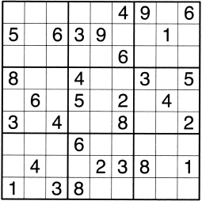

67 解开数独需要几条线索
数学概念：数字谜题

数独可能是美国人最喜欢的消遣之一，但它不仅仅是度过几分钟（或几小时）闲暇时光的一种方式，这种让人入迷的数字游戏背后也蕴含着一些有趣的数学知识。
数独由一个9×9的方格组成，每个方格又分为3×3个小方格（类似大号的松饼烤盘）。玩家需要在每个小方格里填满1～9九个数字，同时，每个数字在大方格的每一行和每一列只出现一次。另外，在每个3×3的小方格里，每个数字只能出现一次。方格里有数独设计者事先输入的一些数字（参见下图），是引导玩家解开数独的线索。数独还有一个特点———每个数独只有唯一一个解。
都柏林大学的盖里·麦克奎尔领导的一个数学团队发现，要让一个数独有唯一的解，最少需要17条线索，如果少于17条，数独的解将不是唯一的。但麦克奎尔及其团队未能找出证明方法，相反，他们只是利用计算机计算出所有的可能性。事实上，他们在都柏林的爱尔兰高端计算中心花了约700万小时的运算时间，用上了所有的计算机，因为数独可能的解的数量是个庞大的数字———6670903752021072936960。好在这些研究人员根据不同的解在数学上相等的原则，设计了一个算法，在这个算法的基础上，将这个数字缩小到了可控的大小。
这一切都说明，即使是当地报纸上的一种消遣方式，背后也充满了有趣的数学知识。
NP完全问题
2002年，数学家们宣称数独是NP完全的（NP表示非确定性多项式时间）。什么意思呢？实际上，数独没有快速简单的解法，即便确定已知的解法是否正确很简单。